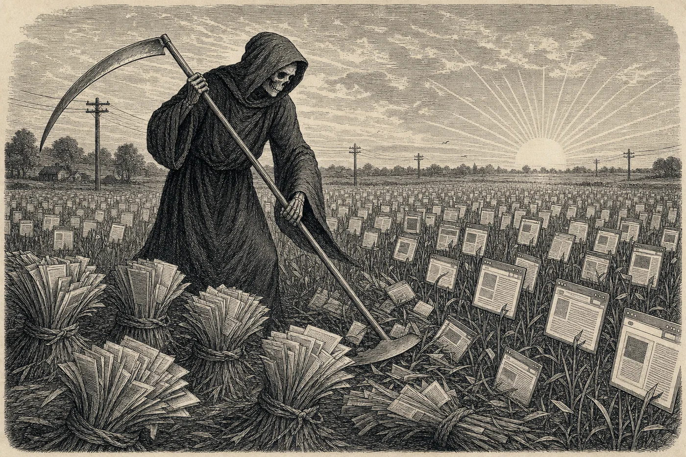

GENERAL AVAILABILITY · NO SUBSCRIPTION REQUIRED
THE WEB, REAPED ENTIRE.
An Engine of some Twelve Megabytes turns Any Page to clean Markdown, or to honest JSON; asks for no Docker, no Account, and no Meter.
Bot-Checks overcome by an Automatic Escalation, to the Consternation of Gatekeepers everywhere. Gentlemen of .NET rejoice.

It is the pleasure of this Journal to report the general availability of WebReaper, an engine of the AI-native school which any householder may obtain in a moment by Homebrew (the exact line waits in Stop Press, at right), by a POSIX script, or, for the .NET craftsman, by dotnet add package WebReaper. The whole apparatus weighs about twelve megabytes, requires no runtime whatever, and is issued under the MIT licence, which is to say: yours, even in trade.
Its habits are simple. Commanded webreaper scrape https://example.com, it returns the page as clean Markdown in a tidy envelope of {title, markdown, url}, fit for any modern language-model or an honest pipe. Given --schema, it returns JSON fields instead, cut by CSS selector with deterministic scissors and at no cost in tokens. Commanded webreaper crawl, it takes the whole estate: recursive, on-domain, seeded by sitemap, streaming one JSON line per page as fast as the presses can turn.
The engine presents three faces to the working public: the command-line instrument here described; a fluent library for .NET, in which the same harvest reads .Crawl(url).AsMarkdown().WriteToConsole(); and servers of the Model Context Protocol, by which the mechanical agents now entering domestic service may command it directly. A household keeping a Claude need only say webreaper init, and the skill is installed in the study; thereafter "scrape the morning's headlines" finds the engine without ceremony.
Where intelligence is wanted, namely for schema inference, natural-language extraction, or the autonomous trade, the proprietor brings his own: any IChatClient serves, whether of OpenAI, Anthropic, Ollama, or a llamafile kept in the pantry. Where it is not wanted, the engine spends nothing at all. The Journal has verified every claim in this number against the shipped binary, and prints the receipts in its Prospectus.